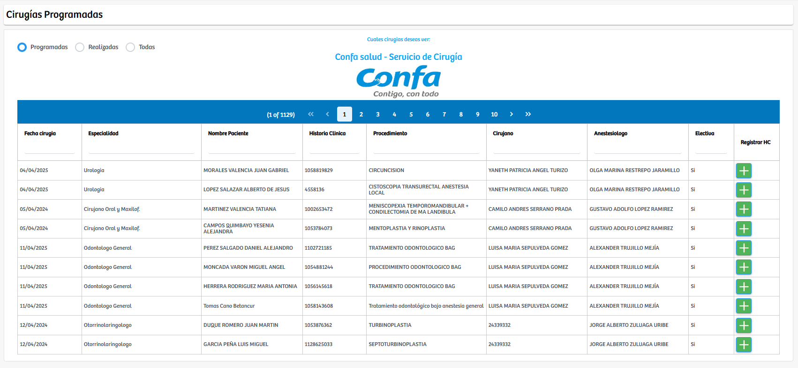
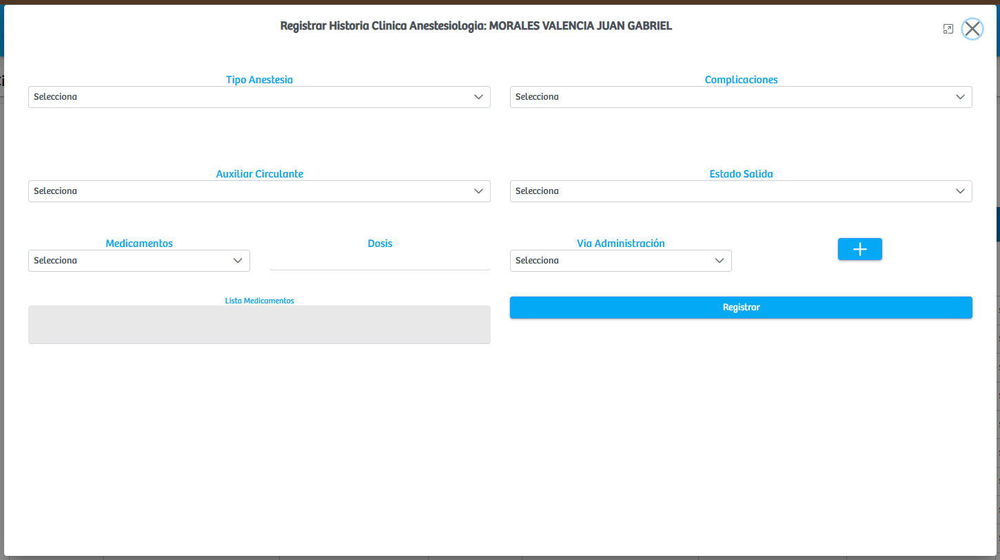
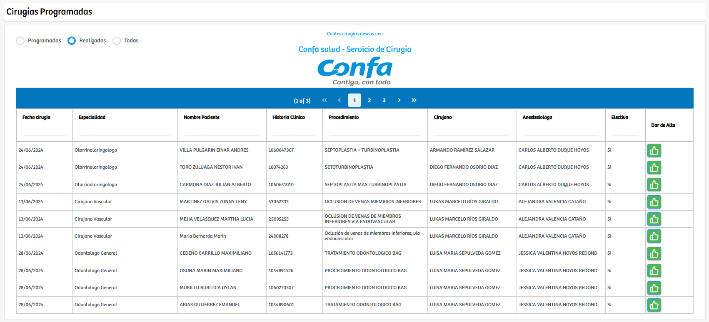
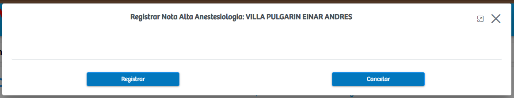

Modulos Sas-Web
Funcionalidades
Anestesiologia
El módulo Anestesiologia permite gestionar de manera integral la información relacionada con los procedimientos anestésicos de cada cirugía registrada en el sistema. Al ingresar, el usuario puede visualizar todas las cirugías disponibles, organizadas según su estado en tres apartados principales: Programadas, Realizadas y Todas. En el apartado de Programadas se muestran las cirugías que están próximas a llevarse a cabo. Cada registro presenta información clave como la fecha de la cirugía, especialidad, nombre del paciente, historia clínica, procedimiento programado, profesional a cargo y si se trata de un procedimiento electivo. Además, cada fila cuenta con un botón que permite registrar la información de la historia clínica anestesiológica.
Al seleccionar este botón, se despliega un formulario en un modal donde el profesional puede registrar datos específicos de la atención anestésica. Este formulario incluye campos para elegir el tipo de anestesia realizada, registrar posibles complicaciones, asignar el auxiliar circulante, seleccionar el estado de salida del paciente y añadir los medicamentos utilizados con su respectiva dosis y vía de administración. Una vez diligenciada toda la información, el usuario puede oprimir el botón de registrar, lo que automáticamente trasladará el procedimiento al apartado de Realizadas.
En el apartado de Realizadas se encuentran todas las cirugías cuyo registro anestésico ya fue completado. Cada uno de estos registros presenta un nuevo botón identificado como Dar de alta, el cual abre un modal destinado a registrar la nota de alta anestésica. En este espacio se pueden consignar anotaciones finales, observaciones y cualquier información relevante para el cierre del procedimiento. Tras guardar esta información, el registro queda oficialmente finalizado dentro del sistema y disponible para consultas posteriores.
 Finalmente, el apartado Todas reúne todos los registros existentes, tanto programados como realizados, permitiendo una visualización completa del historial de procedimientos anestésicos. Este módulo facilita la trazabilidad, el control documental y el registro adecuado de la atención anestésica, garantizando que cada procedimiento quede debidamente documentado y cumpla con los estándares requeridos.